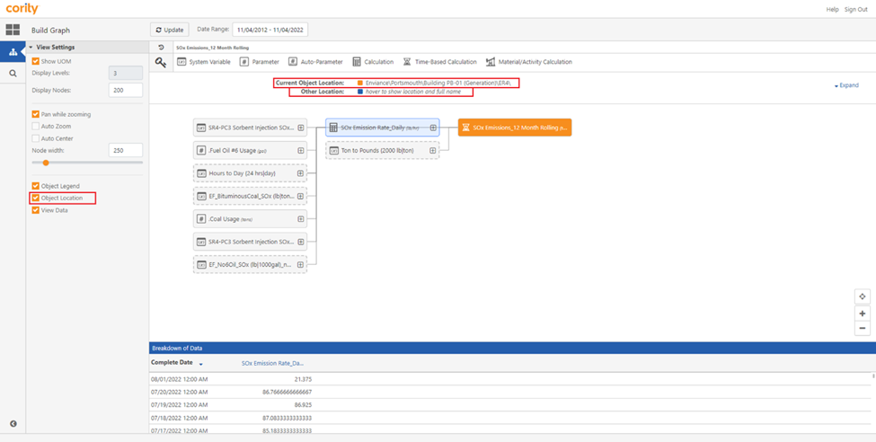
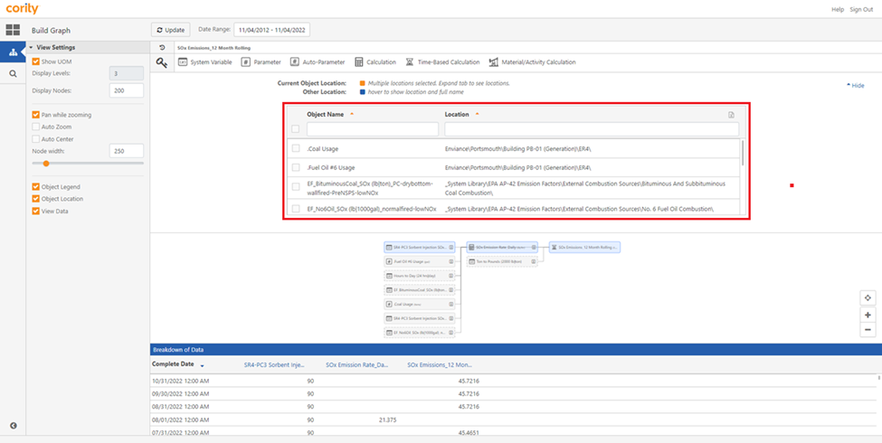

The Object Location function provides users information of the source location of a requirement.
The “Current Object Location” will provide information on the requirement a user has selected, this will have a blue outline around it. The “Other location” will provide information on a requirement that the user hovers over that is not selected.
To view Object location of a Requirement

To view the object locations of multiple requirements, ensure that the “Data View” mode is turned on, and then click the Expand icon.

To export the List of multiple selected requirements to an Excel sheet, click on the checkbox beside each requirement, and click the Export button.
To hide the list of multiple selected requirements in the Current Object Location section, click the Hide icon.